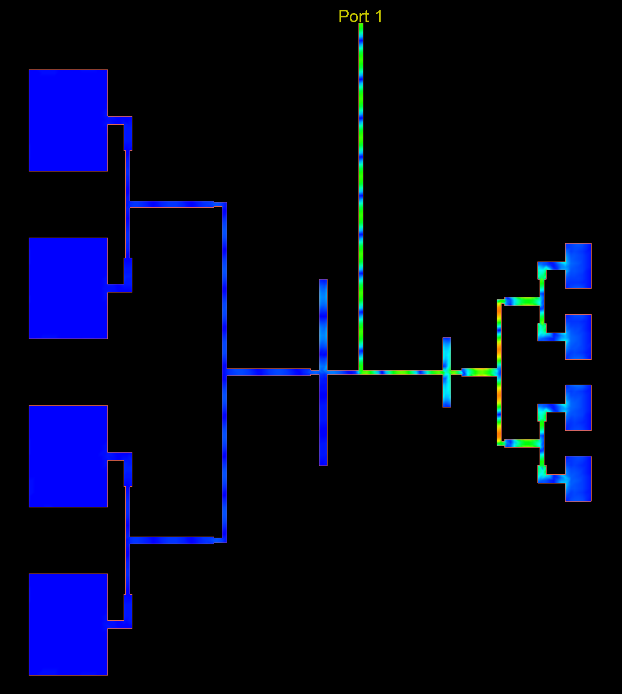
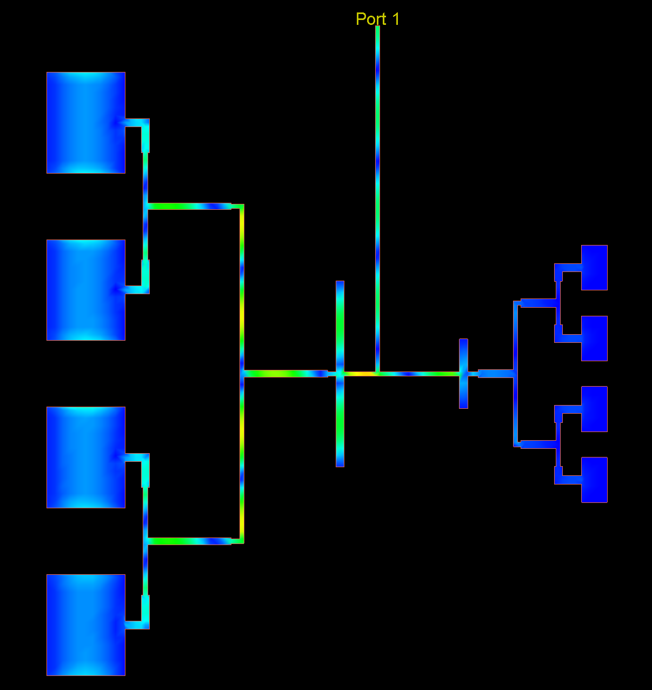
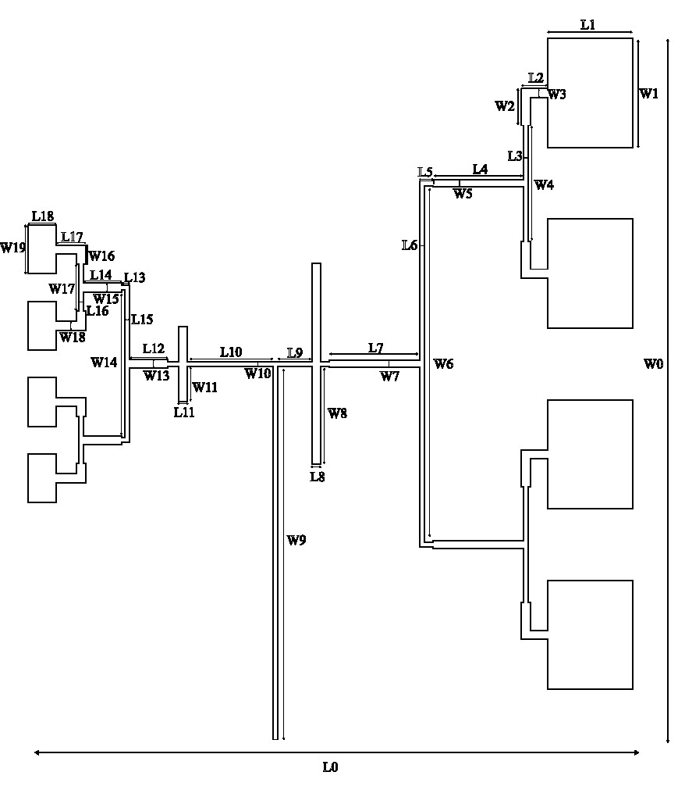
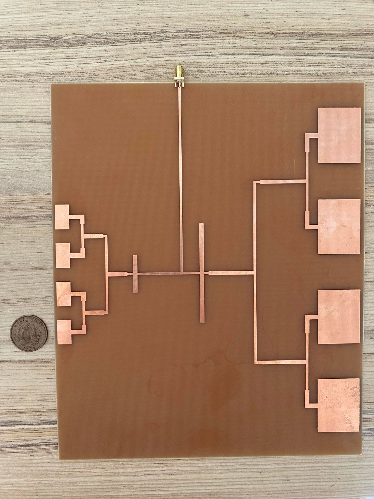
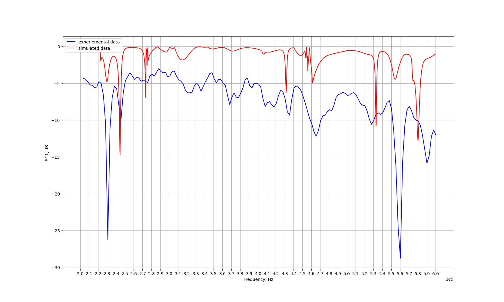

Projects
Multi-thread GUI Traffic road system simulation - Java
Project outline
This project invloded implementing a simulation of a road intersection. Traffic on road segments was to be controlled through a group of phases. Each phase is an interval of time assigned to the movement of traffic through a traffic signal. The control flow was to use synchronized threade to ensure efficient runtime execution. Below excerps from the codebase are outlined to showcase some important software engineering fundimentals covered in this project. The entire codebase and exported .jar file is available here.
Vehicle class
Vehicle.java
public class Vehicle extends Thread{
private String numberPlate;
private int crossTime;
private int direction;
private Boolean crossingStatus;
private int length;
private int segment;
private int emissionsPerSecond;
private String vehicleType;
private long initialisationTime;
private long crossingStatusTime;
private Boolean isGreen = false;
private Phase phase;
public Vehicle(String numberPlate, String vehicleType, int crossTime, int direction, int length, int emissionsPerSecond ,
Boolean crossingStatus, int segment, Phase phase) throws PlateNumberFormatException {
//Constructor Exception handling
}
//Class methods
}Unit Testing
An excerpt from one of the implemented unit tests, designed to capture all possible edge cases for a user inputted numberplate. Throws custom PlateNumberFormatException.
VehicleConstructorTest.java
@Test
public void wrongPlateNumber() {
Phase p = new Phase(1, 15);
// Wrong format => Space missing
assertThrows(PlateNumberFormatException.class, () -> new Vehicle("XX23XXX", "Car", 10, 3, 5, 2, false, 4, p),
"Expected to throw an PlateNumberFormatException, but it didn�t");
// Wrong format ==> Letters instead of numbers or spaces
String plateNumber = "XX23 XXX";
for (int i = 2; i < 5; i++) {
plateNumber = "XX23 XXX";
char[] temporaryArr = plateNumber.toCharArray();
temporaryArr[i] = 'A';
assertThrows(PlateNumberFormatException.class,
() -> new Vehicle(new String(temporaryArr), "Car", 10, 3, 5, 2, false, 4, p),
"Expected to throw an PlateNumberFormatException, but it didn�t");
}
// Wrong format ==> Numbers instead of letters or spaces
for (int i = 0; i < 2; i++) {
plateNumber = "XX23 XXX";
char[] temporaryArr = plateNumber.toCharArray();
temporaryArr[i] = '1';
assertThrows(PlateNumberFormatException.class,
() -> new Vehicle(new String(temporaryArr), "Car", 10, 3, 5, 2, false, 4, p),
"Expected to throw an PlateNumberFormatException, but it didn�t");
}
for (int i = 4; i < 8; i++) {
plateNumber = "XX23 XXX";
char[] temporaryArr = plateNumber.toCharArray();
temporaryArr[i] = '1';
assertThrows(PlateNumberFormatException.class,
() -> new Vehicle(new String(temporaryArr), "Car", 10, 3, 5, 2, false, 4, p),
"Expected to throw an PlateNumberFormatException, but it didn�t");
}
// Wrong format ==> String is bigger than 8 chars in length
assertThrows(PlateNumberFormatException.class, () -> new Vehicle("XX23 XXXX", "Car", 10, 3, 5, 2, false, 4, p),
"Expected to throw an PlateNumberFormatException, but it didn�t");
// Wrong format ==> String is smaller than 8 chars in length
assertThrows(PlateNumberFormatException.class, () -> new Vehicle("XX23 X", "Car", 10, 3, 5, 2, false, 4, p),
"Expected to throw an PlateNumberFormatException, but it didn�t");
// Wrong format ==> Empty string
assertThrows(IllegalStateException.class, () -> new Vehicle("", "Car", 10, 3, 5, 2, false, 4, p),
"Expected to throw an IllegalStateException, but it didn�t");
// Wrong format ==> Null string
assertThrows(IllegalArgumentException.class, () -> new Vehicle(null, "Car", 10, 3, 5, 2, false, 4, p),
"Expected to throw an IllegalArgumentException, but it didn�t");
}GUI
Simplified gui code to illustrate how each Swing JComponent was used and integrated to build the window structure, additionally there is also an example of event handling within the gui.
Gui.java
public Gui(Intersection intersection) {
this.intersection = intersection;
//Main window
JFrame frame = new JFrame("Intersection");
frame.setDefaultCloseOperation(JFrame.DISPOSE_ON_CLOSE);
frame.setSize(1280, 720);
frame.getContentPane().setLayout(new MigLayout("", "[1254px]", "[672px]"));
//.....
//Used for navigation between pages
JTabbedPane tabbedPane = new JTabbedPane(JTabbedPane.BOTTOM);
//General Information tab
JPanel genInfoPane = new JPanel();
tabbedPane.addTab("General Information", null, genInfoPane, null);
//......
//ScrollPane to contain the laneTable
JScrollPane scrollPane2 = new JScrollPane();
genInfoPane.add(scrollPane2, "cell 1 1 1 2,growx,aligny top");
laneTable = new JTable();
laneTable.setModel(new DefaultTableModel(
new Object[][] {
},
new String[] {
"Phase", "Lanes", "Duration"
}
) {
boolean[] columnEditables = new boolean[] {
false, false, false
};
public boolean isCellEditable(int row, int column) {
return columnEditables[column];
}
});
//......
//Example ActionListener implemented to handle ActionEvents and open a Pop-up
JButton newButton = new JButton("New");
newButton.addActionListener(new ActionListener() {
public void actionPerformed(ActionEvent e) {
}
});
newButton.addMouseListener(new MouseAdapter() {
@Override
public void mouseClicked(MouseEvent e) {
// Opens add vehicle pop-up
Add.mainGui(intersection);
}
});
//......
//Advanced Features tab
JScrollPane advFeaturesPane = new JScrollPane();
//......
//Export Settings tab
JPanel exportPane = new JPanel();
tabbedPane.addTab("Export settings", null, exportPane, null);
//.....
}Logger Singleton
The singleton pattern was utilized to ensure only one instance of the Log class could be instantiated.
Log.java
public class Log {
//Singleton instantiation
private static Log instance = new Log();
private ArrayList<String> logList = new ArrayList<String>();
//private to prevent any more Log objects from being instantiated
private Log() {
}
//public access to singleton instance
public static Log getInstance() {
return instance;
}
// Log methods
}Vital signs monitoring using Microstrip antenna - ADS, MATLAB
Aims
The aims of this project were to design and test a dual band microstrip antenna array for vital-signs monitoring applications. The required dual resonating frequencies being 2.45GHz and 5.8GHz respectively.
Several micro strip arrays were designed in ADS keysight software; two separate 4x1 arrays which resonate at 2.45GHz and 5.8GHz respectively, which were then combined through the use of rectangular stubs into a 2x4 array which resonates at both frequencies. The combined antenna array was then fabricated on campus at Heriot-watt university and subsequently experimentally tested for its S11 and far-field parameters to evaluate it’s performance.
Design
Array design parameters
Both 4x1 arrays were combined to form a 4x2 array which resonates at dual frequencies 2.45GHz and 5.8GHz. In order to combine the individual arrays, rectangular shunt stubs were used to match the characteristic impedance’s of both arrays’ respective feed lines. Stubs act as a DC open circuit and an RF short circuit corresponding to the 4/\(\lambda\) length of the particular resonating frequency.
Quarter wave transformers
By placing the stubs \(\lambda\)/4 distance of of the opposite resonating frequency in parallel along the transmission line, (with the distances being 30.59 mm and 12.92 mm respectively) and setting length of the stubs to be \(\lambda\)/4 of the corresponding resonating frequency(with the lengths of the shunt stubs being 12.92mm and 30.59mm respectively) they can be used to effectively short circuit the transmission lines leading to either the 2.45GHz array or the 5.8GHz array depending on the resonating frequency and act as an open circuit depending on the resonating frequency; this allowing current to flow to only one of the 4x1 arrays. This allows both arrays to resonate independently of each other at their intended frequencies without the need for any external components such as a switch to manually operate the array.
 
Final Combined Design
Shown below is the layout of the final combined antenna array design, with rectangular stubs used to match both individual arrays.
 
Results
The simulated results shown below were obtained using ADS keysight for the S11 parameters and Momentum for the Far Field parameters. To model the complex behavior of microwave circuits, ADS uses an approach called Method of Moments (MoM). MoM extrapolates observations in order to make some prediction, and can be used to solve deterministic or eigenvalue problems.

Particle Swarm Optimisation - Python
PSO was implemented using a list containing each particle as an object. With each particle object having its own location vector, velocity vector, list of random informants and personal best; the location and velocity vector length was adaptable depending on number of dimensions, allowing flexibility of use/testing. The particle class also includes an informant update and personal best update functions for ease of readability and streamlining. A ring topology was used for the social element of the search, meaning each particle is only connected to its neighbours to avoid pre-mature convergence on local optima.
The implemented PSO algorithm was used to solve the CEC 2005 optproblems, which can be found at https://www.simonwessing.de/optproblems/doc/cec2005.html.
Particle.py
#Particle object which contains random location and velocity
class Particle(object):
def __init__(self,index,n_informants):
self.index = index
#particles location, assigned randomly within the min and max bounds of specified function
self.loc = np.random.uniform(function.min_bounds, function.max_bounds,n_dimensions)
self.vel = np.zeros(n_dimensions) #Velocity vector (initally set to zero)
#initally assigning each particle randomly n_informants through an index in range of swarmsize
self.informants = np.random.randint(0,swarmsize-1,n_informants)
#sets the particles inital personal best as inital location
self.pbest = self.loc
#updates the particle's informants(used each iteration)
def update_informants(self):
self.informants = np.random.randint(0,swarmsize-1,n_informants)
#updates each particles personal best
def update_pbest(self):
if (ideal - self.loc) < (ideal - self.pbest):
self.pbest = self.locPSO.py
#Swarm list to contain these particle objects
swarm = []
#Populating swarm list with particle objects
for i in range(swarmsize):
swarm.append(Particle(i,n_informants))
#finds global best value by creating a list of fitnesses for each particle, compares them all
def global_best():
#finds informant best value by creating a list of fitnesses for each particle, compares them all
def informant_best(x):
#velocity update calculation, which takes personal best, informant best and global best into consideration
swarm[j].vel[n] =alpha*swarm[j].vel[n] + b*(swarm[j].pbest[n] - xi)+c*(swarm[i_best].loc[n]-xi) +d*(swarm[best].loc[n]-xi)
#updating each particles location with updated velocity
swarm[k].loc = swarm[k].loc + E* swarm[k].velGenetic Algorithm - Python
genetic_algorithm.py
#Initializing random adult population vector
def initalize_population(POP_SIZE:int):
population = []
for i in range(POP_SIZE):
#creating population
population.append(np.random.randint(function.min_bounds, function.max_bounds,n_dimensions))
return population
#Return fitness value for each member of population in list
def assess_fitness(population:list):
population_fitness = []
for i in range(len(population)):
population_fitness.append(function(population[i])-ideal)
best = np.argmin(population_fitness)
return best
#One point crossover of two parents to create 2 unique children
def one_point_crossover(vector_1, vector_2):
length = len(vector_1)
c = np.random.randint(1, length)
if c != 1:
for i in range(c, length):
vector_1[i] ,vector_2[i] = vector_2[i] ,vector_1[i]
return vector_1, vector_2